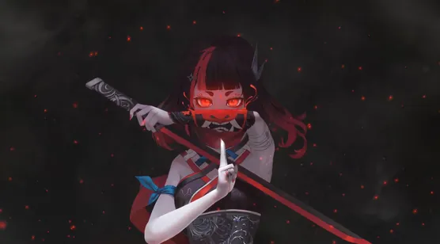

<!doctype html>
<html>

	<head>
		<meta charset="utf-8">
		<title></title>
		<meta name="viewport" content="width=device-width,initial-scale=1,minimum-scale=1,maximum-scale=1,user-scalable=no" />
		<link href="css/mui.css" rel="stylesheet" />
		<style type="text/css">
			body{
				background: url(./img/openimg.jpg) no-repeat center;
				background-size: inherit;
			}
		</style>
	</head>

	<body>
		<!--  -->
		<script src="js/mui.min.js"></script>
		<script type="text/javascript">
			mui.init()
			// mui.plusReady(function(){
			// 	setTimeout(()=>{
			// 		plus.webview.open('index.html')
			// 	},30000)
			// })
		</script>
	</body>

</html>